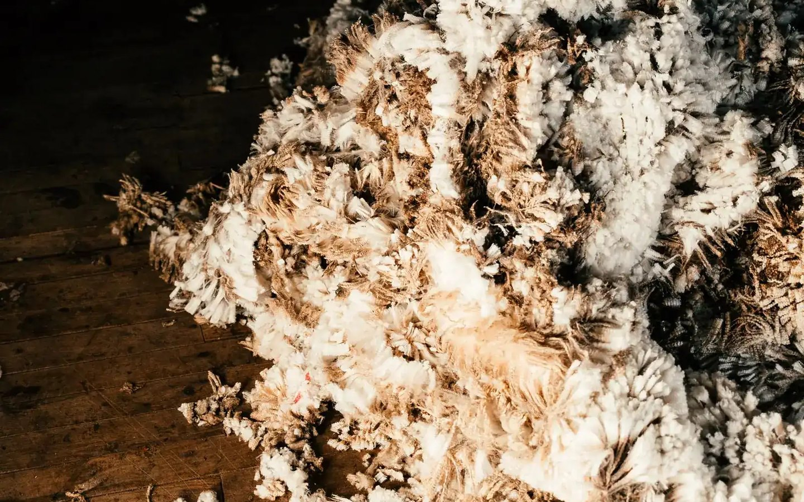
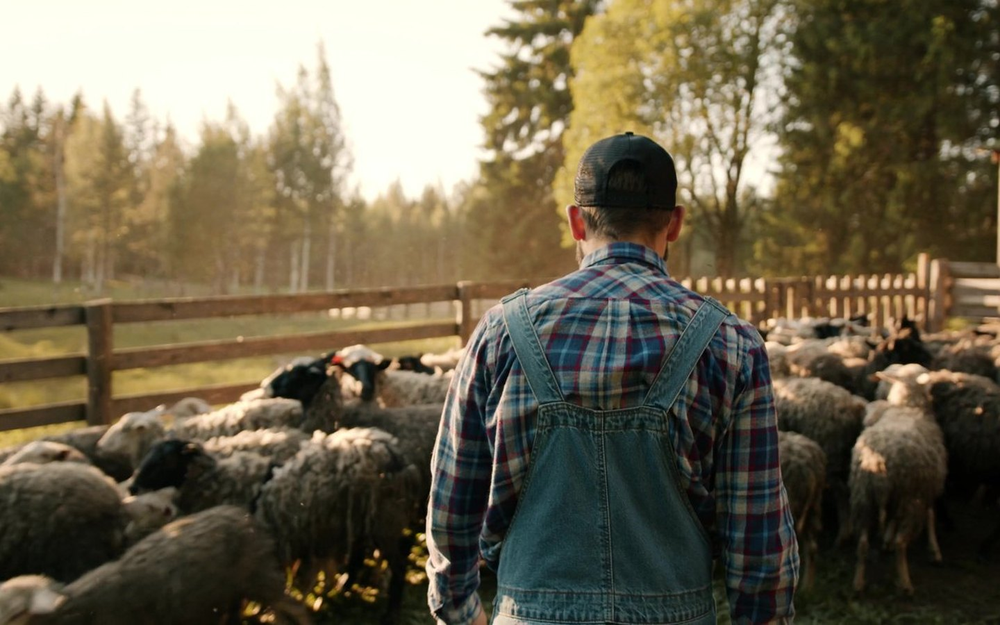
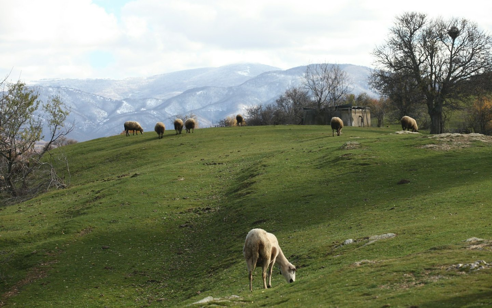
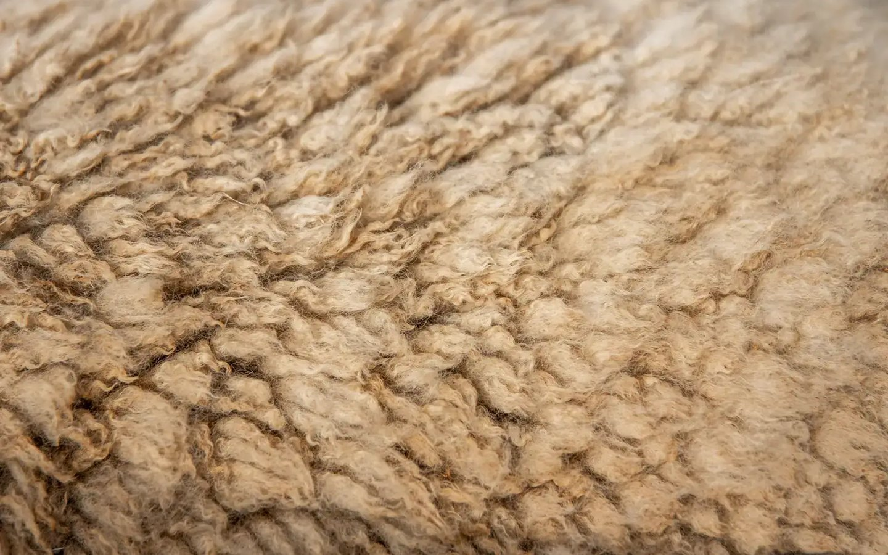
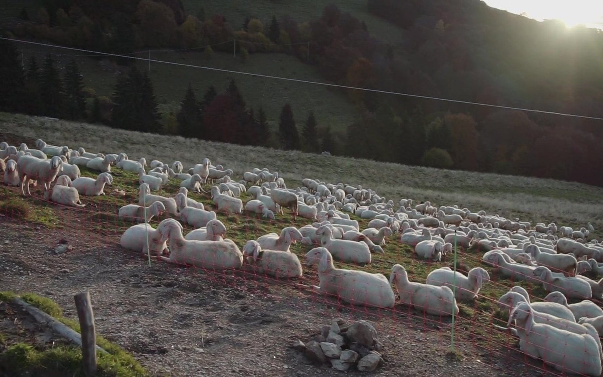

Imagina un material aislante que regula la humedad, no arde con facilidad, no suelta microplásticos y se produce solo, cada primavera, en miles de explotaciones de España y Portugal. Ahora imagina que ese material, al entrar en el cálculo de huella de carbono de un edificio, sale peor parado que un derivado del petróleo.
No es una hipótesis: es lo que le pasa hoy al aislamiento de lana de oveja. Y no porque la lana funcione mal —aísla estupendamente—, sino porque el sistema con el que medimos el impacto ambiental de los materiales no está diseñado para materiales vivos.
En este artículo te contamos dónde falla exactamente esa medición, qué acaba de cambiar en 2026 para corregirla, y por qué esto importa tanto si eres arquitecto como si eres ganadero o artesano. Porque el problema no es la oveja: es la calculadora.

Vellones recién esquilados. Un aislante ya producido que, en muchas explotaciones ibéricas, se queda amontonado en la nave.
La paradojaUn aislante que ya existe y que se tira
Empecemos por la paradoja. España mantiene una cabaña de cerca de 15 millones de ovejas (datos MAPA), y todas se esquilan cada año porque el esquileo es una necesidad de bienestar animal: la oveja está ahí por la carne y la leche, y la lana sale igualmente. Pero como el precio no cubre ni el esquileo, una parte enorme de esa lana se queda amontonada en las fincas o se paga por deshacerse de ella. Un material aislante ya producido, tratado como residuo.
Mientras tanto, la obra nueva y la rehabilitación consumen cantidades crecientes de aislantes industriales —lana de roca, lana de vidrio, poliestireno, poliuretano— fabricados con alto consumo energético o directamente derivados del petróleo.
¿Por qué no se encuentran? Uno de los motivos es sorprendente: los números. Cuando un prescriptor compara materiales con las herramientas estándar de Análisis de Ciclo de Vida (ACV), la lana llega con una mochila que no le corresponde: la huella de toda la cadena ganadera. El resultado es que un aislante que ya existe y hoy se tira puntúa peor que uno que hay que fabricar desde cero.
Y esto va a importar cada vez más. La nueva Directiva europea de Eficiencia Energética de los Edificios (EPBD, Directiva 2024/1275) obliga a calcular y declarar el potencial de calentamiento global de todo el ciclo de vida de los edificios nuevos: desde 2028 para los de más de 1.000 m² y desde 2030 para todos. Es decir: la huella de los materiales deja de ser un extra voluntario y pasa a ser ley. Si la calculadora está mal, el error se convierte en norma.
Las cuatro cifras que sostienen este artículo. Todas con fuente al pie.
Una aclaración importante antes de seguir, porque aquí se mezclan dos cosas distintas. El certificado de eficiencia energética de toda la vida (la etiqueta de la A a la G) mide cuánta energía consume el edificio al usarse — y ahí la lana rinde perfectamente, con una conductividad térmica comparable a la de los aislantes convencionales. Donde la lana sale mal parada es en la evaluación ambiental del edificio y de sus materiales: los ACV, las Declaraciones Ambientales de Producto (DAP) y los sellos tipo LEED, BREEAM o VERDE que miden la huella de carbono incorporada. Ese es el terreno donde la medición falla. Vamos a verlo por partes.

La cabaña existe por la carne y la leche. La lana sale igual, y con ella la pregunta de quién carga con sus emisiones.
El frameworkLos 5 fallos de la calculadora
1No distingue el carbono biogénico del fósil
Es el fallo de raíz. El carbono que hay en la lana no ha salido de un pozo de petróleo: lo capturó la hierba de la atmósfera por fotosíntesis, la oveja se comió la hierba, y ese carbono acabó formando parte de la fibra. Es carbono biogénico: forma parte del ciclo natural y vuelve a él. El carbono de un aislante de poliestireno, en cambio, es carbono fósil: llevaba millones de años enterrado y lo hemos añadido a la atmósfera.
Las herramientas de ACV convencionales tratan ambos igual. La International Wool Textile Organisation (IWTO) lo documentó en su Green Book, presentado en agosto de 2026 en su 95º Congreso: las metodologías estándar «no distinguen entre sistemas de producción biogénicos renovables y procesos industriales lineales basados en combustibles fósiles», y el resultado sistemático es que las fibras sintéticas puntúan mejor que las naturales.
¿Y cuando alguien sí hace bien las cuentas? La norma ISO 14067:2018 —que sí contabiliza el carbono biogénico— aplicada a la producción de lana en un estudio publicado en Agricultural Systems y verificado por la certificadora independiente TÜV SÜD arroja una reducción de la intensidad de carbono de la lana de entre el 35 % y el 102 % según la explotación. Sí, has leído bien: en algunos casos, más del 100 % — la explotación captura más carbono del que emite.
Carbono biogénico
Lo capturó la hierba del aire por fotosíntesis hace un año. Estaba dentro del ciclo y al final de la vida del material vuelve a él.
Carbono fósil
Llevaba millones de años enterrado y lo hemos sacado. No vuelve a ningún sitio: se queda en la atmósfera.
Las herramientas de ACV convencionales meten los dos en la misma casilla. Ahí empieza el error.
2Le cuelga a la lana la mochila de toda la oveja
El segundo fallo es de reparto. Una oveja produce carne, leche y lana. Cuando el ACV reparte las emisiones de la explotación (el metano, los piensos, el transporte), la lana recibe una parte de esa mochila — a veces una parte desproporcionada para un producto que, en el sistema ibérico, es un subproducto que nadie ha pedido.
Aquí está el argumento que más nos importa en Oficios Circulares: la lana ya existe. La oveja no se cría para hacer aislante; se cría para carne y leche, y hay que esquilarla por su propio bienestar. No se consume ni un recurso adicional para producir esa fibra. Cargarle a un material que hoy acaba amontonado en la finca las emisiones de una cabaña ganadera que existiría igualmente es, sencillamente, medir mal. El impacto marginal de aprovechar esa lana es el del lavado y el transporte. Punto.
| Criterio | Lana de oveja | Lana mineral | Poliestireno / PUR |
|---|---|---|---|
| Origen de la materia prima | Subproducto que ya existe | Roca/vidrio fundido a más de 1.400 °C | Derivados del petróleo |
| Carbono de la fibra | Biogénico (capturado del aire) | — | Fósil (añadido a la atmósfera) |
| Fin de vida | Biodegradable, compostable | Reciclable con limitaciones, mayormente vertedero | Microplásticos, difícil reciclaje |
| Regulación de humedad | Absorbe hasta un tercio de su peso sin perder capacidad aislante | No | No |
| Comportamiento al fuego | Autoextinguible (~560 °C autoignición) | Incombustible | Necesita retardantes |
Comparativa por criterio, no una nota global: cada proyecto pondera distinto. En incombustibilidad total, la lana mineral conserva la ventaja.
3Ignora lo que vuelve al suelo
Las cuentas convencionales miran lo que sale de la explotación, pero no lo que retorna. El estudio de Agricultural Systems midió algo que los modelos anteriores omitían: más del 50 % del carbono que ingiere la oveja vuelve al suelo en forma de estiércol, alimentando la salud del suelo y su capacidad de secuestrar carbono. En sistemas de pastoreo extensivo como los ibéricos —los mismos que mantienen paisajes, previenen incendios y fijan población rural— ese flujo es parte esencial del ciclo. Un modelo que lo ignora no está simplificando: está describiendo otro sistema.
4Corta la película antes del final
Un ACV honesto llega hasta el fin de vida del material. Ahí la lana juega en otra liga: es biodegradable (se descompone en nutrientes en suelo y agua sin dejar rastro tóxico), no libera microplásticos —al contrario que los aislantes sintéticos, que los sueltan durante toda su vida y después— y es, según los datos del sector, la fibra con mayor tasa de reciclaje: en torno al 6 % de la lana producida se recicla, muy por encima de la media del resto de fibras. Los retales de un jersey llevan más de un siglo convirtiéndose en mantas y relleno en comarcas laneras de media Europa: la circularidad de la lana no es una promesa, es una industria centenaria.
Cuando la comparación entre aislantes se hace solo «de puerta de fábrica a obra», todo esto desaparece del cálculo. Y es exactamente la parte donde la lana gana.

Pastoreo extensivo. Al final de su vida útil, un aislante de lana se descompone en nutrientes y vuelve a un suelo como este; un sintético, no.
5Compara contra un ideal que no existe
Último fallo, el más de sentido común: descartar la lana por su huella implica usar otra cosa. ¿Y cuál es la alternativa real? ¿Lana de roca fundida a más de 1.400 °C? ¿Poliestireno expandido? ¿Espuma de poliuretano proyectada? El impacto de cualquier aislante industrial difícilmente va a ser menor que el de aprovechar una fibra que ya está producida, que hoy es un problema de gestión para el ganadero y que al final de su vida se composta.
La pregunta correcta nunca es «¿cuánto emite la lana?» sino «¿cuánto emite la lana comparada con lo que usaríamos en su lugar, contándolo todo y contándolo bien?».
El aislamiento de lana de oveja funciona (y bien)
Que no se nos olvide entre tanto número: la lana es un aislante técnicamente excelente. Su conductividad térmica está a la altura de los aislantes convencionales; regula la humedad absorbiendo y liberando vapor de agua (hasta un tercio de su peso) sin perder capacidad aislante, lo que amortigua condensaciones en climas húmedos; es ignífuga de forma natural —autoextinguible, con autoignición en torno a los 560 °C, sin necesidad de los retardantes de llama de los sintéticos—; y mejora el aislamiento acústico por la propia estructura tridimensional de la fibra. No estamos defendiendo un material mediocre por romanticismo: estamos defendiendo un buen material mal medido.

El rizo de la fibra es lo que atrapa el aire: de ahí salen a la vez el aislamiento térmico y el acústico.
Temperatura de autoignición de la lana, sin un solo retardante químico añadido. Por encima de la de la madera y la de muchos materiales de obra.
Ignífuga por naturaleza, no por tratamientoNo es teoríaQuién trabaja ya la lana ibérica como material
🐑 RMT-Nita
Santa Eulàlia de Ronçana · BarcelonaEmpresa lanera desde 1979 que fabrica Nita Wool, aislamiento de lana de oveja en manta, panel y borra, con Documento de Idoneidad Técnica Europeo (DITE 10/0330) evaluado por el ITeC. La prueba de que la lana puede entrar en obra con papeles.
🐑 AbrigoVivo
PortugalProyecto dedicado al aislamiento térmico y acústico natural en lana de oveja para el mercado portugués y español. La península empieza a mover ficha.
🐑 Wooldreamers
Mota del Cuervo · CuencaLavadero e hilatura que trabaja con lanas autóctonas españolas y presta servicio de lavado a terceros desde 30 kg: el eslabón que convierte el vellón sucio en materia prima utilizable, también para usos no textiles.
La lección de los tres: la cadena existe, pero está fragmentada. Ganaderos con lana sin salida por un lado, fabricantes buscando fibra trazable por otro, y en medio una normativa —la clasificación de la lana como subproducto animal de categoría 3 (Reglamento CE 1069/2009 y Reglamento UE 142/2011)— que complica el movimiento y los usos de la lana sin lavar. La lana lavada alcanza el llamado «punto final» y circula libremente para uso textil; para otros usos, el marco sigue siendo un laberinto que merece (y tendrá) su propio artículo. Si quieres el mapa de quién trabaja lana en España, lo desarrollamos en qué hacer con la lana de oveja que hoy se tira.
Quién firma los datos y por qué te lo contamos
Seamos transparentes, porque en Oficios Circulares no vendemos cuentos: la IWTO es la patronal mundial del textil lanero. Que la industria de la lana publique un informe diciendo que la lana es estupenda debe leerse con la misma cautela que un informe del plástico diciendo que el plástico es estupendo. Hay además un debate científico abierto sobre cómo contabilizar el metano ganadero, y organizaciones ecologistas han acusado al sector ganadero de «contabilidad creativa» en otros frentes.
Por eso los datos que sostienen este artículo no descansan en la opinión de la IWTO sino en tres patas verificables: una norma internacional pública (ISO 14067:2018), un estudio revisado por pares en una revista científica (Agricultural Systems) y una verificación independiente (TÜV SÜD). Se puede —y se debe— seguir afinando la metodología. Lo que no se sostiene es seguir usando una calculadora que trata igual el carbono de un pasto y el de un pozo de petróleo.
¿Vas a defender la lana ante un cliente o una certificadora?
Nos hemos guardado las cifras, la tabla comparativa y las frases exactas en un argumentario de 6 páginas. Con fuentes, para que no tengas que buscarlas tú.
Descargar el argumentario →Errores comunes al defender (o descartar) la lana
Confundir la etiqueta energética con la huella ambiental. El certificado A-G mide consumo de energía en uso; la huella de materiales es otra cuenta. La lana no te baja la letra de la etiqueta: el conflicto está en los ACV y sellos ambientales.
Descartar la lana «porque no tiene papeles». Existen productos con evaluación técnica (como el DITE de Nita Wool). Si tu proveedor no tiene DAP, pídesela: la demanda de los prescriptores es lo que empuja al sector a generarlas.
Defender la lana con el «es natural» a secas. Eso es greenwashing con buena intención. Defiéndela con datos: subproducto existente, carbono biogénico, ISO 14067, fin de vida biodegradable.
Comparar precios sin comparar prestaciones. La lana regula humedad y mejora la acústica; el precio por m² no captura eso. Compara soluciones completas, no céntimos por centímetro.
Tratar la lana local como residuo. Si eres ganadero y pagas por deshacerte de la lana, ese coste es una señal de que falta cadena, no de que falte valor. Hay proyectos trabajando en conectarla.
Hoja de rutaSi quieres prescribir o usar lana en obra
¿Obra nueva o rehabilitación? ¿Te afectará el cálculo de ciclo de vida de la EPBD (2028/2030)?
Resultado: saber qué te van a exigir y cuándo.Contacta fabricantes (en la península ya los hay) y solicita ficha técnica, evaluación técnica europea y DAP si existe.
Resultado: dossier técnico real, no suposiciones.Compara la lana con tu alternativa habitual incluyendo fin de vida y carbono biogénico, no solo el dato de catálogo.
Resultado: una comparación honesta que puedas defender ante cliente o certificadora.Una partida concreta: trasdosado interior, cubierta, tabiquería. Documenta el resultado.
Resultado: tu primer caso propio, con datos, para la siguiente obra.Al final de estas cuatro semanas no habrás cambiado el sistema de medición europeo, pero sí tendrás algo mejor: criterio propio y un precedente documentado.
Preguntas frecuentes
¿La lana de oveja aísla igual de bien que la lana de roca?
¿Es legal usar lana de oveja como aislante en España?
¿Por qué la lana puntúa mal en los cálculos de huella de carbono?
¿No arde la lana en un incendio?
Soy ganadero y tiro la lana cada año. ¿Qué hago con ella?
La lana no necesita marketing: necesita una calculadora justa
Es un material que ya existe, que aísla bien, que se biodegrada al final de su vida y que hoy se amontona en las fincas mientras la obra se llena de derivados del petróleo con mejor nota. En 2026, con la ISO 14067 y el trabajo de verificación independiente, la ciencia ha empezado a corregir el error. Ahora falta que lo corrijan las herramientas, las DAP y los pliegos de condiciones.

Quince millones de ovejas se esquilan cada año en España. La fibra ya está ahí; lo que falta es una cuenta que la mida bien.
Si tienes lana sin salida o buscas lana ibérica para un proyecto, en Conecta Lana —nuestra bolsa gratuita de lana— ponemos en contacto a ganaderos con talleres, fabricantes y proyectos que la necesitan. Sin comisiones: solo la convicción de que un buen material no debería acabar en un montón.
Fuentes
ISO 14067:2018, Greenhouse gases — Carbon footprint of products · Estudio sobre intensidad de carbono en producción de lana publicado en Agricultural Systems, con verificación independiente de TÜV SÜD · International Wool Textile Organisation (IWTO), Green Book, 95º Congreso, agosto de 2026 · Directiva (UE) 2024/1275 relativa a la eficiencia energética de los edificios (EPBD refundida), arts. sobre potencial de calentamiento global del ciclo de vida · Reglamento (CE) 1069/2009 y Reglamento (UE) 142/2011 sobre subproductos animales no destinados al consumo humano · Censo ganadero ovino, MAPA · DITE 10/0330 (Nita Wool), evaluado por el ITeC.
Descárgate el argumentario
Las cifras, la tabla comparativa y las frases exactas para defender la lana. Gratis y con fuentes.
Descargar el argumentario →¿Tienes lana o la necesitas?
Conecta Lana es nuestra bolsa gratuita: pone en contacto a ganaderos con talleres, fabricantes y proyectos que buscan lana ibérica.
Entrar en Conecta Lana →